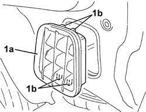

5010C60 LH OR RH REAR AIR OUTLET VENT (ONE) - R.R
- Path
- Procedures > 50 AUXILIARY UNITS > 5010 CLIMATE CONTROL - MISCELLANEOUS > 5010C AIR VENTS > 5010C60 LH OR RH REAR AIR OUTLET VENT (ONE) - R.R
- Kind
- repair procedure (removal / refitting; the operation number is the code)
- Applies to
- all engines; all production periods
- Interactive page
- https://sloeber94.github.io/elrnDB/alfa/159/en/#/939010895
Applies to: all engines; all production periods
 Removing
Removing
 Refitting
RefittingFor the left and right sides.
Op. 5540A56 EXTERIOR REAR LIGHT (ONE), LEFT OR RIGHT - R.R.
1. Remove the rear vent (1a) releasing the inner retainers (1b).

Applies to: all engines; all production periods
Refitting
Removing- Check that the rear vent is not damaged.
- Refit the rear vent and attach the retainers to the bodyshell.